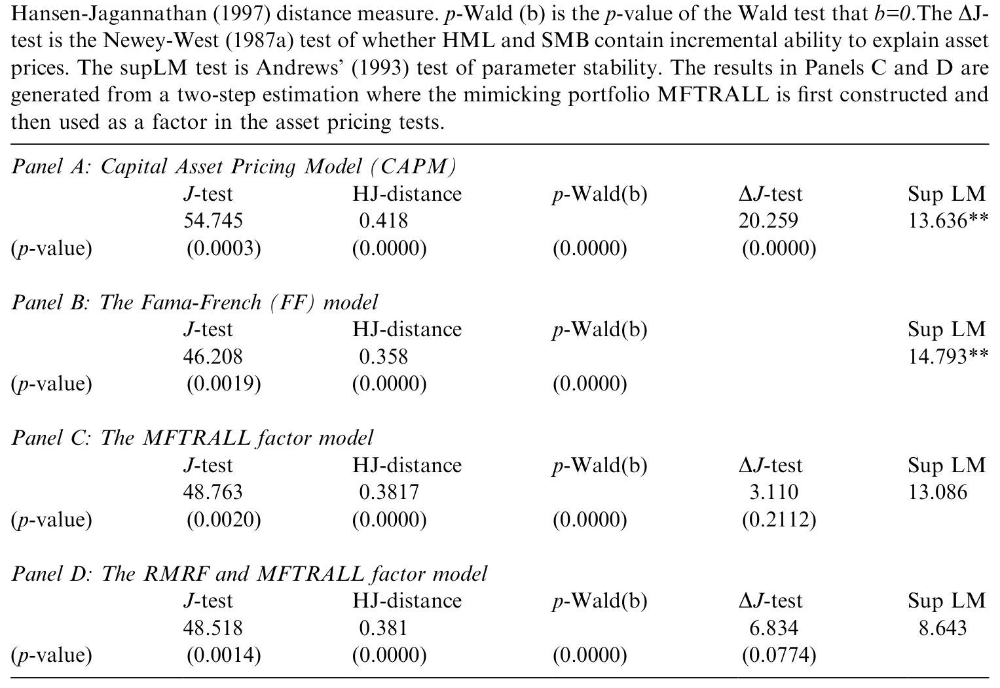
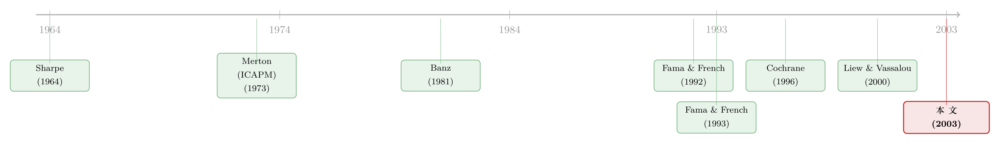

HML 和 SMB 到底是什么？——它们其实在替「明年的 GDP」打工
本文读的是 Vassalou (2003, Journal of Financial Economics)：把一个「与未来 GDP 增长有关的新闻」因子和市场因子放进定价核，对横截面收益的解释力就能逼平 Fama-French 三因子模型；更要命的是，一旦这个 GDP 新闻因子在场，HML 和 SMB 几乎丧失了所有增量解释力——它们看上去，主要就是「未来 GDP 增长的新闻」的代理。
1 一个悬而未决的老问题
先把时间拨回 1992 年。Fama 和 French 在那篇著名的论文里干了一件让 CAPM 很难堪的事：他们证明，美国股票的横截面平均收益，单靠市场 beta 几乎解释不动，反倒是 账面市值比 (book-to-market, B/M) 和 规模 (size) 这两个「特征」说了算。于是他们提出了一个替代模型，在市场因子之外加了两条腿——和 B/M 挂钩的 高减低因子 (High-Minus-Low, HML)，以及和规模挂钩的 小减大因子 (Small-Minus-Big, SMB)。
这个模型（下称 FF 模型）好用得出奇。Fama-French 在 1993、1995、1996 一连串文章里反复证明：它把平均收益解释得相当漂亮。可问题也就在这儿——它好用，但没人说得清它为什么好用。
HML 和 SMB 到底是什么？它们代表的是某种真实的、系统性的经济风险，还是仅仅是从数据里「挖」出来的、carryover 了规模效应（Banz, 1981）和账面市值比效应（Rosenberg et al., 1985）这两个老异象的统计构造？这不是一个吹毛求疵的问题。Fama-French 自己（1993, 1996）也辩护说，HML 和 SMB 是 Merton（1973）跨期资本资产定价模型 (Intertemporal CAPM, ICAPM) 意义上的 状态变量 (state variables)——也就是说，它们应当携带关于经济基本面风险的信息，这种风险会改变投资者的投资机会集。
这是一句很重的话。如果 HML、SMB 真是 ICAPM 的状态变量，那它们背后就该藏着某个看得见摸得着的宏观量。问题是：是哪一个？
接着，一个自然的线索浮了出来。Liew 和 Vassalou（2000）发现：HML 和 SMB 能够预测未来的经济增长。也就是说，这两个因子里确实掺着关于未来宏观状况的信息。那么——本文要追的，就是这条线索的下一步：如果把「未来 GDP 增长的新闻」直接做成一个因子塞进定价模型，会发生什么？HML 和 SMB 还剩下多少独立的解释力？
这篇论文的贡献，可以用一句话概括：它没有去发明新因子，而是去给旧因子「验明正身」。 结论相当锋利——HML 和 SMB，主要就是未来 GDP 增长新闻的代理。
2 真正棘手的一步：新闻是「看不见」的
要把「未来 GDP 增长的新闻」做成因子，第一道坎就来了：新闻 (news) 本身是不可观测的。
注意，这里要的不是「预期」，也不是「实际值」。在资产定价里，只有创新 (innovation)——也就是预期之外的那一部分——才赚风险溢价。你把「市场预期的未来 GDP」或者「实际的未来 GDP」塞进定价核，都不能回答「关于未来 GDP 的新闻有没有被定价」这个问题。而新闻恰恰是最难直接测量的东西。
那怎么办？作者的办法是构造一个 模仿组合 (mimicking portfolio)。
思路其实很优雅：既然新闻会影响资产价格，那它一定已经反映在某些资产的收益里了。于是反过来——用一组资产的收益去「张成」这个不可观测的宏观变量，回归的拟合值就保留了同样的信息，只不过现在它被表达成了一个可交易组合的收益（这是 Breeden et al., 1989 提出的经典做法）。模仿组合还有一个副产品：它天然回避了宏观变量的测量误差问题。
但真正关键的一步在于「过滤」。一个朴素的模仿组合，混着的是 GDP 的水平信息；我们要的是新闻。Lamont（2001）给出的处理是：在回归右边加入一组能预测基础资产收益的控制变量，把可预测的部分剥掉，剩下的拟合值就更接近「创新」。本文正是这么做的——基础资产用了 8 个组合（6 个股票组合 + 2 个固定收益组合：TERM 和 DEF），控制变量则是 4 个老牌收益预测变量：违约利差 DEFY、期限利差 TERMY、30 天国库券利率 RF，以及 Lettau-Ludvigson（2000）的去趋势财富变量 CAY。
这里藏着一个常被忽略的细节：基础资产里的那 6 个股票组合，正是 Fama-French 用来构造 HML 和 SMB 的那 6 个组合（两个规模 × 三个 B/M 的交叉排序）。换句话说，作者是用造 HML/SMB 的同一批砖头，去砌「GDP 新闻」这堵墙。后面那个「夺权」式的结论，根子就埋在这里。
3 基础资产真能预测未来 GDP 吗？
在把模仿组合塞进定价模型之前，得先回答一个前提问题：这 8 个基础资产，真的含有关于未来 GDP 增长的信息吗？如果连这一步都不成立，后面整套故事就是空中楼阁。
作者跑的是一个「四个季度之后的 GDP 增长」对当期基础资产收益的回归：
$$GDPGR_{t,t+4} = a + c\,B_{t-1,t} + e_{t,t+4}$$
这里 \(GDPGR_{t,t+4}\) 是 \(t\) 到 \(t+4\) 之间的 GDP 增长，\(B_{t-1,t}\) 是 8 个基础资产在 \(t-1\) 到 \(t\) 之间的收益向量（6 个股票组合的收益都已减去无风险利率 RF，所以 8 个全是零投资组合）。标准误用 Newey-West（1987b）估计量，修正了三阶序列相关和 White（1980）异方差。
结果是站得住的。全样本（1953:Q1–1998:Q4）的调整 \(R^2\) 达到 16.12%，意味着未来 GDP 增长里有相当一块能被这 8 个资产预报出来；联合检验「8 个系数全为零」的渐近 p 值是 0.0000，更稳健的 bootstrap（10,000 次模拟）经验 p 值也只有 0.0020。两个子样本的调整 \(R^2\) 都在 18% 量级（18.58% 和 18.78%）。单看个体系数，因为基础资产之间共线性严重，多数不好解释，但有一个例外格外醒目：DEF（长期公司债减长期国债的收益）的系数是 0.333，t 值 3.06——违约利差类资产对未来增长的预报力，是这组里最扎实的。
顺带一提，把 4 个控制变量也放进右边后，调整 \(R^2\) 跳到 38.62%。这说明控制变量本身预测力很强；正因为它们强，把它们剥掉之后剩下的「新闻」才更干净。
4 方法论：用一步 GMM 把「生成因子」的标准误补回来
到这里，故事的骨架已经清楚了，但还有一个技术性的、却又绕不开的麻烦：模仿组合是「估」出来的。如果先估一个因子、再拿这个估计值当自变量去做第二阶段回归，就会掉进经典的 生成回归量 (generated-regressors) 陷阱——第二阶段的标准误会被低估，因为它假装第一阶段的因子是已知的。
本文的资产定价检验走的是 随机贴现因子 (stochastic discount factor, SDF) 路线。在无套利下，存在一个定价核 \(m\)，使每个资产都被正确定价：
$$E(Rm) = p$$
其中 \(R\) 是 \(n\times 1\) 的总收益向量，\(p\) 是价格向量（超额收益时 \(p=0\)，简单收益时 \(p=1\)）。所有被比较的模型——CAPM、FF、以及本文的 GDP 因子模型——都是线性因子模型，因此它们的定价核都能写成因子的线性组合：
Cochrane（1996）证明了「定价核是因子的线性函数」与「用 beta 和因子风险溢价表达的因子定价模型」二者等价：
$$E(R) = R_0\,p + b'\lambda$$
其中 \(R_0 = 1/E(m)\) 是零 beta 利率，\(b = \mathrm{cov}(r, f')\,\mathrm{var}(f)^{-1}\) 是资产收益对因子的投影，\(\lambda = -R_0\,\mathrm{cov}(f, f')\,b_1\) 是风险溢价。估计用 Hansen（1982）的 广义矩估计 (Generalized Method of Moments, GMM)，目标函数是
$$J_T = g_T(b)'\,W_T\,g_T(b)$$
\(g_T(b)\) 是样本定价误差向量，\(W_T\) 是权重矩阵。
那么生成回归量的问题怎么解决？作者借用了 Cochrane（2001）的招法：把模仿组合和资产定价模型放进同一步 GMM 里一起估。具体做法是把模仿组合回归的矩条件，摞在资产定价模型的矩条件上方，再选一个权重矩阵 \(A\)，让上方那块（识别模仿组合的矩）被精确匹配——也就是在 \(A\) 的左上角放一个单位矩阵。这样一来，模仿组合和定价模型的系数估计，与「两步法」完全相同；但标准误不同——它被调整过，反映了「模仿组合是被生成出来的」这一事实。
一步法只能用季度数据，因为 GDP 只有季度频率。所以作者也保留了两步法：两步法的系数和一步法一模一样，但能上月度数据（用模仿组合做因子，540 个月度观测），并且方便用到一些做模型比较和诊断所必需的特定权重矩阵。两条腿走路，各取所长。
为了比较模型，作者祭出了三件趁手的工具：(1) Hansen-Jagannathan 距离 (HJ-distance)——用 \(E[RR']^{-1}\) 做权重矩阵，它跨模型不变，且有一个漂亮的解释：它就是一组资产的最大定价误差（Campbell-Cochrane, 2000 正是这么用的）；(2) Andrews（1993）的 supLM 检验，看参数在样本期里稳不稳；(3) 最关键的——一个直接检验 HML、SMB 在 GDP 因子在场时还有没有增量解释力的统计量。
这第三件工具值得单说。在两步法里，它是 Newey-West（1987a）的 \(\Delta J\) 检验：先估一个含 GDP 因子 + HML + SMB 的非约束模型，拿它的权重矩阵去估一个剔除 HML、SMB 的约束模型。如果这俩因子真没有增量贡献，约束模型的 \(J\) 函数就不该上升多少：
$$\Delta J = T J(\text{restricted}) - T J(\text{unrestricted}) \sim \chi^2(\#\,\text{restrictions})$$
在一步法里，同一假设用 Wald 检验。Newey-West（1987a）证明二者在一般的异方差和序列相关假设下渐近等价。整篇论文的「胜负手」，就压在这个检验上。
5 结果：GDP 因子来了，HML 和 SMB「下岗」了
数据是 25 个 Fama-French 组合加上 30 天国库券利率（共 26 个测试资产），样本期 1953–1998。月度检验 540 个观测，季度检验 180 个；季度估计因为观测数只有月度的三分之一，为了不拖垮 GMM 估计量的表现，只用了 12 个能很好概括全部 25 个组合性质的组合（外加国库券），并刻意挑了那些历来最难定价的，比如小盘成长股。
主要结论有两层。
第一层，能力上「打平」。 把 GDP 新闻因子加到 CAPM 上（即「市场 + GDP 新闻」两因子模型），对横截面的解释力显著提升，定价误差的模式和量级都与 FF 模型相仿。也就是说，一个只有两条腿、但其中一条腿有明确宏观含义的模型，干得和 FF 三因子模型差不多好。
第二层，也是真正的反转——HML 和 SMB 几乎被「吸干」。 当 GDP 新闻因子在场时，HML 和 SMB 对横截面几乎没有剩余的增量解释力。\(\Delta J\) 检验（两步法）和 Wald 检验（一步法）都指向同一个结论：剔除这两个因子，约束模型的 \(J\) 函数没有显著上升。换句话说，HML 和 SMB 之前在 FF 模型里扮演的角色，相当大一部分可以由「未来 GDP 增长的新闻」来接管。
如表 6 所示，把几个竞争模型放在同一张表上对比——CAPM、FF、以及 GDP 因子模型——GDP 因子模型在 HJ 距离（最大定价误差）等口径上与 FF 模型旗鼓相当，而它所依赖的因子，宏观解释更干净。

Table 6: presents a summary of the results from estimating the competing models
至此，文章开头那个悬案就有了一个有说服力的答案：HML 和 SMB 之所以能定价，很可能不是因为它们神秘，而是因为它们替「明年的经济」打了工。这与「HML/SMB 是 ICAPM 状态变量」的辩护是自洽的——它们确实在携带基本面风险的信息，只不过那个基本面，现在被指认成了「未来 GDP 增长的新闻」。
（关于「风险究竟能不能把价值、规模这些异象收编」这个更大的争论，可参见《会「看天」的 beta：当风险收编了价值与规模，动量却躲进了商业周期》；而把宏观风险反推回每一家公司的努力，可参见《理论最美、却没人用的模型：把「消费风险」反推回每一家公司》。）
6 文献脉络
把这条线索捋直，故事其实很清楚。
起点是 Sharpe（1964）的 CAPM——一个因子（市场）定天下。但市场 beta 解释不了规模效应（Banz, 1981）和账面市值比效应（Rosenberg et al., 1985）这些顽固的异象。于是 Fama 和 French（1992, 1993）干脆把这两个异象「升格」成因子，造出了 HML 和 SMB，实证上大获成功，却留下了「它们到底是什么」的理论欠账。
与此同时，Merton（1973）的 ICAPM 提供了一个理论容器：多因子可以是描述投资机会集变动的状态变量。Fama-French 借这个框架为自己辩护，但始终没能指出那个具体的宏观状态变量是谁。方法论上，Cochrane（1996）把 SDF 与 beta 定价打通、并提出用条件信息缩放收益做稳健性，给这一脉的实证检验铺好了路。
真正点燃本文的是 Liew 和 Vassalou（2000）：他们发现 HML、SMB 能预测未来经济增长。本文则把这条线索推到尽头——直接用模仿组合把「未来 GDP 增长的新闻」做成因子，并证明它能在很大程度上取代 HML 和 SMB。

这条脉络后来一直延续到把宏观、消费、投资基本面与横截面收益挂钩的种种努力，也延续到 Cochrane 那句著名的判断——资产定价的中心议题是贴现率（可参见《贴现率：资产定价的中心议题》）。本文是这条「给因子找经济灵魂」道路上一块结实的踏脚石。
7 评论与延伸（Q&A + 研究方向）
(a) 几个可能的疑问
Q：这篇文章是不是说 HML 和 SMB 没用了？
不是。文章说的是「在 GDP 新闻因子在场时，
HML、SMB没有增量解释力」，这是一个关于「谁包含谁的信息」的论断，而非否定 FF 模型的定价能力。FF 模型依然好用——只是它好用的原因，被指认成了「未来 GDP 增长的新闻」。两者更像是同一枚硬币的两面。
Q：为什么非要用「模仿组合」，直接拿实际 GDP 或预期 GDP 当因子不行吗？
不行，这是全文的方法论命门。风险溢价只奖励创新（新闻），而非水平或预期。把实际/预期未来 GDP 放进定价核，回答不了「关于未来 GDP 的新闻有没有被定价」。模仿组合做了两件事：把不可观测的新闻表达成可交易收益，同时（通过加控制变量过滤）剥掉可预测部分、留下创新。它还顺手回避了 GDP 数据的测量误差。
Q：用造 HML/SMB 的那 6 个组合去构造 GDP 因子，再说 GDP 因子能取代 HML/SMB，这不是循环论证吗？
这是最该警惕的一点，但严格说不算循环。基础资产相同，不代表「张成」出来的因子相同——
HML/SMB是这些组合的特定线性组合（多空价差），而 GDP 模仿组合是「最能预测未来 GDP 增长」那个方向上的线性组合，并经过控制变量过滤。两者是同一组砖头砌出的不同结构。真正的证据在于：GDP 方向的组合能预测 GDP（\(R^2=16\%\)、bootstrap p=0.002），且在它在场时HML/SMB的 \(\Delta J\) 不显著。不过这个共享基础确实让人想追问：换一批基础资产，结论稳不稳？这正是作者用第 6 节专门检验的。
Q：HJ 距离凭什么比 Hansen 的 J 检验更可信？
因为标准的过度识别 J 检验（Eqs. 6–7）很容易漏掉模型误设（Newey, 1985 早有提醒）。HJ 距离用的是跨模型不变的权重矩阵 \(E[RR']^{-1}\)，因此适合横向比较；更重要的是它有经济解释——最大定价误差。比起「模型有没有被拒」，「模型最多错多少」对实务更有意义。
Q：DEF 的系数 0.333（t=3.06）这么突出，是不是说信用利差才是真正的主角？
很值得玩味。
DEF是这组里对未来 GDP 增长预报最稳的单个资产，呼应了「信用利差含宏观增长信息」的大量证据。但因为基础资产之间共线性很强，作者明确说不要过度解读单个系数，检验主要看联合显著性。换句话说，DEF抢眼，但故事是「8 个资产合力」，而非「DEF一人定乾坤」。
Q：结论对数据频率敏感吗？季度只用了 12 个组合，会不会是挑出来的？
作者对此是诚实的：季度只能上 12 个组合，是因为 180 个观测撑不起 26 个资产的 GMM；挑的标准是「能概括全部 25 个组合的性质」，并刻意纳入最难定价的小盘成长股。同时月度（540 obs，两步法）能上全套资产，结论一致。两个频率互相印证，降低了「挑样本」的嫌疑——但季度估计的小样本属性，仍是这类 GMM 检验天然的软肋。
(b) 几个可能的研究问题与提案
1. 把「GDP 新闻因子」搬到公司债横截面上。
【经济故事】公司债收益对宏观增长的暴露，理论上比股票更直接——违约本质上是经济周期的函数，而本文里恰恰是
DEF这个固定收益资产对未来 GDP 预报最强。一个自然的问题是：未来 GDP 增长的新闻，能不能定价公司债的横截面（按评级/久期分组），并取代信用市场里那些「特征因子」？ 【可行性】中。数据可得（TRACE + 评级 + 宏观），识别沿用本文的模仿组合 + 一步 GMM 即可。难点在于公司债流动性噪声大、收益测量误差比股票严重，需谨慎处理。
2. 外资持有人是否改变了「GDP 新闻」的定价。
【经济故事】如果某国股票的边际投资者越来越是全球分散的外资，那么本地 GDP 新闻作为系统性风险的「价格」应当被压低——因为对全球投资者而言它更接近可分散风险。把本文因子放进一个随「外资可投资度」变化的设定里，可以检验「谁是边际投资者」如何重塑宏观因子的风险溢价。 【可行性】中。需跨国股票收益 + 各国 GDP + 外资持股/可投资度数据（如 MSCI 可投资度）。识别可用可投资度放开作为准自然实验。挑战是各国 GDP 数据质量与频率参差。
3. 危机期间 GDP 新闻因子与流动性因子的「争夺」。
【经济故事】2008、2020 这样的窗口里，横截面收益既被宏观增长预期主导，也被流动性枯竭主导。一个有意思的问题是：在极端时段，
HML/SMB让出的解释力，到底流向了「GDP 新闻」还是「流动性」？这能帮我们分辨「价值溢价」在危机里到底是基本面故事还是流动性故事。 【可行性】高。数据现成（高频流动性指标 + 本文因子），识别用滚动窗口或状态依赖的 GMM。结论对「价值溢价的本质」之争有直接含义。
4. 用更高频/更及时的「增长新闻」替代季度 GDP。
【经济故事】季度 GDP 既滞后又会被修订，是本文方法论上最大的牺牲。若用 nowcasting 或月度活动指标构造「增长新闻」，模仿组合的信噪比可能改善，从而更干净地检验
HML/SMB的「被取代」是否更彻底。 【可行性】高。月度宏观活动指数已成熟，识别框架完全沿用本文，唯一新增的是新闻构造方式。属于「换一个更好的尺子重做一遍经典」的稳健性升级。
8 我的判断
这篇论文的贡献不在于「又发明了一个因子」，而在于它换了个方向发问：与其继续往模型里加腿，不如回头问一句——已经在用的那两条腿，到底站在什么经济地基上？ 把不可观测的「未来 GDP 增长新闻」做成可交易的模仿组合，再用一步 GMM 把生成因子的标准误老老实实补回来，这套手艺干净利落；而「GDP 因子在场时 HML/SMB 的增量解释力消失」这个结论，给 Fama-French 因子提供了一个少有的、具体的宏观解读。
但识别上有两处我会盯着不放。其一是前面提到的基础资产共享问题：GDP 因子和 HML/SMB 用了同一批股票组合，虽然方向不同，但「同源」难免让人担心结论被构造方式所偏好——这正是第 6 节稳健性检验承担的全部重量，它的说服力直接决定了全文的说服力。其二是季度小样本：12 个组合、180 个观测的 GMM，参数估计和 supLM 一类的稳定性检验，天然吃不饱数据；月度两步法虽能补上观测，却又回到了「两步」的世界。
我接下来最想看到的，是把这套逻辑搬到公司债和信用市场去——那里宏观增长风险的传导链条更短、DEF 在本文里又恰好最抢眼。如果「未来 GDP 增长的新闻」能在信用横截面上同样取代那些特征因子，那么本文「给因子找经济灵魂」的努力，就不只是股票市场里的一个巧合，而是一条更普遍的定价主线。
参考文献
- Banz, R.W. (1981). The relationship between return and market value of common stocks. Journal of Financial Economics 9, 3–18.
- Breeden, D.T., Gibbons, M.R., Litzenberger, R. (1989). Empirical tests of the consumption-oriented CAPM. Journal of Finance 44, 231–262.
- Campbell, J.Y., Cochrane, J.H. (2000). Explaining the poor performance of consumption-based asset pricing models. Journal of Finance 55, 2863–2878.
- Cochrane, J.H. (1996). A cross-sectional test of an investment-based asset pricing model. Journal of Political Economy 104, 572–621.
- Cochrane, J.H. (2001). Asset Pricing. Princeton University Press, NJ.
- Fama, E.F., French, K.R. (1992). The cross-section of expected stock returns. Journal of Finance 47, 427–465.
- Fama, E.F., French, K.R. (1993). Common risk factors in the returns on stocks and bonds. Journal of Financial Economics 33, 3–56.
- Hansen, L.P. (1982). Large sample properties of generalized methods of moments estimators. Econometrica 50, 1029–1054.
- Hansen, L.P., Jagannathan, R. (1997). Assessing specification errors in stochastic discount factor models. Journal of Finance 52, 557–590.
- Lamont, O. (2001). Economic tracking portfolios. Journal of Econometrics 105, 161–184.
- Lettau, M., Ludvigson, S. (2000). Consumption, aggregate wealth and expected stock returns. Journal of Finance 56, 815–849.
- Liew, J., Vassalou, M. (2000). Can book-to-market, size and momentum be risk factors that predict economic growth? Journal of Financial Economics 57, 221–245.
- Merton, R. (1973). An intertemporal capital asset pricing model. Econometrica 41, 867–887.
- Newey, W., West, K. (1987a). Hypothesis testing with efficient method of moments. International Economic Review 28, 777–787.
- Sharpe, W.F. (1964). Capital asset pricing: a theory of market equilibrium under conditions of risk. Journal of Finance 19, 425–442.
- Vassalou, M. (2003). News related to future GDP growth as a risk factor in equity returns. Journal of Financial Economics 68(1), 47–73.